ANALYSIS TO STUDY CUSTOMER BEHAVIOUR AND PREFERENCES IN THE TEXTILE RETAIL MARKET OF INDIAN ADULTS (AGE 18 TO 40 YEARS)
INTRODUCTION
GENERAL BACKGROUND
Clothes are one of the major necessities of humans. The use of animal skin and leaves as clothing materials to now using materials, humans have a long history with textiles. There is evidence suggested that the use of apparels is started even before 30,000 BC. At the beginning, it was just as protective layer that helps humans from harsh weather and other insects and bugs. Even though that remains unchanged, now a days clothes are more like a fashion statement. It shows what is your background, what are you celebrating, etc. People will easily judge you with your looks, it is the door to one’s identity. The importance of textile industry is increasing day by day. Textile has a major contribution to India’s trade history. India is very famous for its cotton, silk, wool, and other textile materials all around the world. Not just the raw materials, India has its craftsmanship which attracts a lot of people. Banarasi to Kanjeevaram and Pochampally to Muga silk show the rich textile culture of India. The historic silk route connecting Europe and Asia shows the influence of the textile industry in the olden period. According to invest India government site [11], 2.3% of Indian GDP comes from textile industry and it is the second largest employment producer after agriculture. This shows the significance of textile industry in India.
IMPORTANCE OF TEXTILE INDUSTRY
The textile business is very profitable in India. With the increase in Indian cultural influence all over the
world the textile of India has a great demand globally. As the most populated country in the world, the
textile demand in India is very high. India is one of the largest producers as well as the consumers of
cotton in the whole world. It is estimated that textile industry directly giving employment to close to 45
Million people and indirectly through other related ways to almost 100 million people. India is the second
largest producer of silk and 95 percent of world’s hand-woven fabric is from India. In the global trade of
textile and apparels India hold around 4%. India is aiming to increase the export to around 100 Billion by
2030. So, it will create a lot of job opportunities and it will boost the economy.
The textile industry of India not only have importance in foreign countries but also it is very important
within the country. 2% countries GDP comes from domestic textile only. The importance of technical textile
is increasing. By industrial revolution textile is one of the first industries that got mechanised. Because
it is a very important but at the same time labour and time-consuming industry. In the modern times more
advanced manufacturing facilities are available, the consumers are expecting better quality, less
time-consuming textile fabric as well. In the technical textile, India only has 5th position in the world.
In this area India has a lot of potential. India’s textile industry is majorly focused on cotton and that is
important. But it needs to expand to other fabrics as well to beat other countries like China in global
trade of textiles.
NEED OF CUSTOMER BEHAVIOUR ANALYSIS
Every business's success depends upon how it is serving its consumers, and how they are satisfying
customers’ demands. Guessing what is in customers' minds is a tricky thing to do. For that proper studies
need to be conducted and understand the factors that will lead to a positive customer experience and that
will further create loyal customer groups. Loyal customers are creating more profits for every business. In
the present-day scenario, people are making online as well as offline textile purchases. There are a lot of
factors affecting the choice of purchase. It changes with the demographic features of the population. In the
total GDP contribution by textile industry, majority comes from India itself. The main purchasers are the
young adults who have purchasing power and highly influenced by the global fashion.
So, it is very important to study the people who plays the key role in this industry as consumers. The
analysis is intended to study the numerous factors that affect the customer's behaviour and its correlation
with demographic features by taking a sample population from all over India through a questionnaire and
analysing the responses.
OBJECTIVES OF THE STUDY
OBJECTIVES
Consumer analysis will provide great insight into consumer behaviour and preferences, which will help to
improve businesses. By studying the demographic features and changes in preferences that depend on
demographic features will help to customize each service to each group based on the requirements. The main
objectives of this study are as follows:
• To study the demographic features of the consumers.
• To study the preferences of consumers in terms of mode of purchase, material of purchase, customization,
type of apparels and its correlation with the demographic features of consumers.
• To study the factors affecting textile purchasing patterns and behaviour of the consumers.
• To analyse the consumer behaviour and preferences data, visualise it and derive meaningful insights from
it.
• To study the brand preferences of the customers and factors affecting the preferences.
LITERATURE REVIEW
CUSTOMER BEHAVIOUR ANALYSIS OF TEXTILE RETAILERS IN TAMIL NADU
Research on consumer preference of textile retailers has been conducted by many researchers. Umamaheswari et
al. [1] studied the consumer preference for textile retail outlets with more emphasis on selected outlets in
Coimbatore city. After economic liberalisation in 1991, Indian textile industry got a great boost. Industry
is divided into different other industries like cotton, silk, wool, handcrafted, jute, etc. By exporting
into foreign markets, the industry has expanded a lot. The textile industry of India is one of the leading
textile industries in the world. The demand for clothes is increasing and factors affecting consumer
behaviour are an important thing to study. Umamaheswari et al. [1] collected data from one hundred
respondents through a questionnaire about a few outlets from Coimbatore which have branches all over Tamil
Nadu. Most responders where males, mostly below 20, unmarried and of undergraduate education. The results
were analysed, and some major conclusions were reached. The varieties of collection were the major factor
influenced and males were the major purchasers. Discounts given by the outlets also have a greater impact in
choosing that retail outlet. Majority of the responders are not visiting same outlet all the time,
considering the variety of outfits available in different stores. Advertisements were the major source of
awareness and trained and well-behaved staff also had an impact on customers' purchases.
Dr. S. Parimala [2] researched consumer satisfaction towards branded retail outlets in Tirupur. Indian
textile industry achieved a record high growth phase and is estimated to grow further. Textile industry is
very important in India’s exports, since it is contributing to 30% of it. National textile mission is aiming
to make India as the global leader in textile industry. PLI schemes are providing to boost the industry
after post covid decline. Not just the textile raw materials of India have reach in global level, the
craftmanship and fashion designers of India also getting the name in the global level. As Tirupur is one of
the main textile manufacturing hubs of India mainly for knit wears, Its retail sector is also very
developed. Two hundred customers were surveyed and by using different analytical tools the results were
obtained. Primary data is collected through field survey. And the secondary data is collected through
journals, websites etc. Chi-square, weighted score ranking etc are used to analyse the collected data.
Accuracy is dependent of responder’s point of view. Majority of the responders were males, married and
mostly in between 20 and 30. New trends, reasonable price, quality of the product were the main factors that
affected choosing an outlet. The problems faced was high price, quality impairment etc. Reliance trends were
the first preference of the consumers which provided quality product in affordable cost. The results
suggested that the customers were cheerful because of the service retail stores provided.
CONSUMER BEHAVIOUR OF APPAREL INDUSTRY IN DELHI
The work done by Dr. Sandeep Kumar [3] on consumer behaviour in the apparel industry in Delhi was reviewed. This research was conducted to study the socio-economic features of customers who prefer branded products and the factors affecting their decision. People prefer branded apparels as they are trendy, shows prestige, durable and high standard. By make in India and Silk India policies, India will be a global fashion centre soon. Retailers are providing values to both producers and consumers by providing different services to both the parties. Random sample of 200 people were taken for studies which mostly consists of females. The age is in the younger side and income is more than 2.4 lakh for most of the responders. The responders who have preference towards branded clothes also have preference to specific stores as well. In effective after sale services were one of the main concerns. The purchasing pattern of relatives and friends also have an impact in the consumer behaviour of an individual. The results of the study suggested that the customers have brand awareness. The factors affecting purchase are durability, diversity in the collection, high standards, etc. In the study, it was also clear that purchasing behaviour also depends on the demographics of the population.
ONLINE APPAREL PURCHASE BEHAVIOUR OF CONSUMERS
Dr. Garima Mathur et al. [4] studied the online apparel purchase behaviour of consumers in Indore City. Online shopping become the one of the major motivations to use internet now a days. People have access to wide range of products and services. The factors affecting conventional instore purchasing cannot be applied to the online purchasing behaviour. Both need separate analysis and tailored services to meet the customers' needs. This can be also applied to segment customers as well. The study suggests that online shopping become the alternative to instore because of its security, convenience and product quality. Another bigger advantage of online shopping is that it will provide customized shopping experience to its customers with lesser transactional cost. And, when retail business moves to online which will create a lot of new job opportunities. 300 consumers were taken from various parts of Indore for the survey and asked a set of structured questions. Results were analysed using descriptive statistics tools and chi-square test. Majority of the responders were male and most of the responders were above 35. The monthly income of most of the responders in the range 20000-40000 and most of them were postgraduates. The study gave great insights into the spending behaviour of consumers, choice of preferences on various collections, and website preferences for shopping. The study suggests that with the rise of social media platforms, brands must focus on marketing through social media. Study also suggested that people were not willing to pay more than 5000 in online for apparel purchase considering online security and high price. The study has given a lot of great insights for retailers for their future strategies. Vinith Kumar Nair et al. [6] studied the consumer behaviour in men’s fashion apparel. 500 young males were part of the study and it suggested to select one apparel quality, comfort and design were important. The study shows people prefer online shopping than instore. Social media ads and TV ads has significant influence in the purchases of the individuals. The study also shows that age and income have a greater influence in the purchasing frequency of the consumer.
RESEARCH METHODOLOGY
RESEARCH HYPOTHESES
As part of this study, the features of textile purchase and its dependency towards various demographic
features of the consumers were planned to study using chi-square test with the help of python. Following are
the features taken to test dependency and the corresponding hypothesis formulated.
Customer can have preference towards customization of the clothes, It can be readymade or custom tailored.
To study how age is associated with customization preference, hypothesis is created.
H0: There is no significant association between age and customization preference.
H1: There is significant association between age and customization preference.
Customer can have preference towards mode of purchasing clothes, It can be online or conventional instore
mode. To study how gender is associated with mode preference, hypothesis is created.
H0: There is no significant association between gender and mode preference.
H1: There is significant association between gender and mode preference.
Annual income of an individual has direct relationship with purchasing power of that person. But whether it
have a positive or negative significance towards that that person’s spending on textile purchase need to
determine. To study how income is associated with spending on textile purchase, hypothesis is created.
Hypothesis were also created to determine the association of education and occupation of the customer on
their average annual spending for textile purchase.
H0: There is no significant association between income and spending on textile purchase.
H1: There is significant association between income and spending on textile purchase.
H0: There is no significant association between education and spending on textile purchase.
H1: There is significant association between education and spending on textile purchase.
H0: There is no significant association between occupation and spending on textile purchase.
H1: There is significant association between occupation and spending on textile purchase.
Locality is the demographic features shows what type of society a consumer is located in. Different types of
cities to villages, people are living in different areas. How locality is influencing the fashion choice and
mode of purchasing, hypothesis is created.
H0: There is no significant association between locality type and mode preference.
H1: There is significant association between locality type and mode preference.
H0: There is no significant association between locality type and fashion choice.
H1: There is significant association between locality type and fashion choice.
RESEARCH PLAN
A descriptive study is conducted to analyse the behaviour and preferences of textile customers in India in
the age
group 18-40 (adults). Customers are the key to the success of every industry. What are customers’ wants and
needs,
What are the factors affecting their purchasing behaviour, etc. need to be studied thoroughly. The factors
affecting
will change rapidly with time. So, studies of consumer behaviour should be conducted constantly to provide
the best
service possible and to expand the business to gain more customers that will be loyal to the brand. Loyalty
customers create more purchasing opportunity for a business than random purchases. To keep the customers,
customer
behaviour and preferences need to thoroughly analyse, and strategies need to be created to stay competitive
in
market. Customer behaviour analysis is developed as a psychological analysis to create better business
plans. With
the help of machine learning and data analysis tools, customer behaviour can be easily analysed and visually
appealing and easily understanding results can be formulated.
Primary data is collected through the questionnaire in the form of Google Forms and reached out to people
through
social media platforms like WhatsApp, Instagram, LinkedIn, etc. The responses are collected from respondents
from
various genders, ages, educational qualifications, occupations, income groups, different zones of India,
etc. Data
regarding their preferences on the mode of purchase, the material of purchase, influencing factors, and
brand
awareness details are collected.
Data collected is cleaned and analysed with the help of R, Power BI, Excel and Tableau. The dependency of
various
categorical variables was studied using chi-square test using python. Hypothesis were created for testing
the
association between these categorical variables that is part of purchasing behaviour and demographic
variables of
the customer. Correlation matrices were created and analysed for various factors affecting customer
preferences.
Various data visualizations and dashboards are created using python, tableau and power BI.
SAMPLING PLAN
Primary data is collected through questionnaires in the google form. Customers were randomly selected and
send out in social media platforms like WhatsApp, Instagram and LinkedIn. Customers were asked to provide
data regarding demographic features such as age, income, gender, locality, etc. These features do not
include any personal identifiable information. This was to give customers more comfort in the question and
to feel safe and secure to answer questions. Customers were asked about the preferences regarding mode,
customization, materials, fashion etc. Brand preferences related questions were also asked to make
meaningful insights.
Secondary data is collected through journals, government sites and other websites. The data collected
through questionnaires is planned to be clean and then samples were planning to collect through random
sampling. Simple random sampling technique is planning to adopt for this research.
RESEARCH PROCEDURE
Once data is collected, it is planned to clean and check for outliers. Outliers were planning to remove and
sample dataset will be collected afterwards. The first process to do after this is to check the association
of demographic features to the purchasing features. Categorical variables will be selected for this, and
chi-square test will be performed in python. Chi square test is a statistical hypothesis testing tool used
to test the dependency of two categorical variables. It is a recommended hypothesis testing tool when sample
size is more than fifty. Hypothesis is created to test using chi-square test. To test chi square in python,
the following procedure is followed. Define the relationship between the categorical variables and
corresponding hypothesis were created. Created contingency table using panda library with the function
pd.crosstab. With the help of scipy.stats library and its chi2_contigency function chi square, p, degree of
freedom was calculated and taking significance level alpha as 0.05, p value and alpha were compared to
accept or reject null hypothesis.
Different factors affecting online and instore purchase were planning to collect from the customers. It is
planning to rank the factors and study the correlation between each is determined by correlation matrix and
heatmap. Correlation matrix will only work in data with numerical values. After the data is cleaned and
sampling is done, data set is created using python library called pandas. From the whole data subset data is
created for online factors and instore factors and corresponding correlations matrices were planning to
create. With the help of matplotlib plot is created and with the help of seaborn library in python heatmap
is created to visualize the correlations between factor variables.
The customers were asked to describe in one word or one phrase their purchasing behaviour. The data were
collected is cleaned and string is created and with the help of word cloud library in python word cloud is
created and plotted using matplotlib.
Other data visualization charts and dashboards are planning to create with the various preferences and
factors data collected with the help of Tableau and Power BI.
DATA ANALYSIS & INTERPRETATION
PROBLEM DEFINITION
To study the customer behaviour and preferences in the textile retail market of Indian adults of age 18-40 yrs. Analyse the data and create dashboards and suggest strategies for the businesses.
DATA COLLECTION
Primary data is collected through questionnaires in the google form. Customers were randomly selected and
send out in social media platforms like WhatsApp, Instagram and LinkedIn. Customers were asked to provide
data regarding demographic features such as age, income, gender, locality, etc. These features do not
include any personal identifiable information. This was to give customers more comfort in the question and
to feel safe and secure to answer questions. Customers were asked about the preferences regarding mode,
customization, materials, fashion etc. Brand preferences related questions were also asked to make
meaningful insights.
Secondary data is collected through journals, government sites and other websites. The data collected
through questionnaires is planned to be clean and then samples were planning to collect through random
sampling. Simple random sampling technique is planning to adopt for this research. After the cleaning of
data 75 responses were taken for further analysis.
DATA CLEANING
Outliers were removed from the data collected. The responses were collected through the social media platforms. Anyone where able to fill their data according to the questionnaire in the google form. Which include people above 40 and people below 18. These outliers were identified using excel and removed from the sample. Some of the questions are marked as optional in google form. Which resulted in null values for those. Which were identified and removed for analysis.
DATA ANALYSIS AND INTERPRETATIONS
Once the data is cleaned the data were summarised and analysed. Total of 75 samples were taken as the sample
population for the analysis.
Which represents the Indian young adults in the range of 18 to 40 yrs. in different sectors. The demographic
distribution of the customers was analysed and tabulated as follows.
Table 1 – Demographic Distribution Table


Most of the responders are in the annual income group 5-10 lakhs consists of 24%. Followed by 3-5 lakhs/ annum which consists of 21%. The least was the income group above 50 lakhs which was 3%. Under graduates and equivalents were a major part of the study with 48% of the total sample. Followed by postgraduates and equivalents with 23%. Least were consumers with PhD which was 1%. While considering the occupation of the responders, professionals where the major part consists of 48%, followed by unemployed with 13%. The least occupation marked by young adults were agriculture which was 4%.
Preferences of the users were analysed for the study. Customers have given questions with multiple choices to select their preference on mode of purchase. Rate at which annually they are spending for textiles in average, what is customization preference and what fashion they prefer on an average. The results were tabulated in Table-2 and are as follows.
Table 2 – Preferences Distribution Table


Material preference of the customers was analysed. The customers were asked to pick first three choices of their preferred materials. Then the data is aggregated and tabulated. Weighted total preference of each material is calculated.
Table 3 – Material Preference Table

The association of demographic features to the purchasing features were analysed. Categorical variables were selected for this, and chi-square test performed in python. To test chi square in python, the following procedure is followed. Defined the relationship between the categorical variables and corresponding hypothesis were created. Created contingency table using panda library with the function pd.crosstab. With the help of scipy.stats library and its chi2_contigency function chi square, p, degree of freedom were calculated and taking significance level alpha as 0.05, p value and alpha were compared to accept or reject null hypothesis.
Different factors affecting online and instore purchase were collected from the customers. It is ranked in the order of least affecting to most affecting factors and analysed the correlation between each by creating correlation matrix and heatmap. Correlation matrix will only work in data with numerical values. After the data is cleaned and sampling is done, data set is created using python library called pandas. From the whole data subset data is created for online factors and instore factors and corresponding correlations matrices were created. With the help of matplotlib plot is created and with the help of seaborn library in python heatmap is created to visualize the correlations between factor variables.
The customers were asked to describe in one word or one phrase their purchasing behaviour. The data were collected is cleaned and string is created and with the help of word cloud library in python word cloud is created and plotted using matplotlib and insights were collected.
Other data visualization charts and dashboards are planning to create with the various preferences and factors data collected with the help of Tableau and Power BI. The material preferences, colour preferences and mode preferences and the factors affecting that are analysed using tableau and power BI and charts and dashboards were created. Then these were analysed to derive information.
RESULTS & DISCUSSION
CHI-SQUARE ANALYSIS
The association of demographic features to the purchasing features were analysed. Categorical variables were selected for this, and chi-square test performed in python. To test chi square in python, the following procedure is followed. Defined the relationship between the categorical variables and corresponding hypothesis were created. Created contingency table using panda library with the function pd.crosstab. With the help of scipy.stats library and its chi2_contigency function chi square, p, degree of freedom were calculated and taking significance level alpha as 0.05, p value and alpha were compared to accept or reject null hypothesis. The following are different hypotheses tested and the results obtained.
DEPENDENCY ANALYSIS OF AGE AND CUSTOMIZATION
Customer can have preference towards customization of the clothes, It can be readymade or custom tailored.
The hypothesis created to test this is shown below.
H0: There is no significant association between age and customization preference.
H1: There is significant association between age and customization preference.


As Figure-1 shows the testing done to check the significant association between age and customization using python. The results were obtained and as shown in Figure-2. There is a significant association between age of the customer and the customization preference of the customer.
DEPENDENCY ANALYSIS OF GENDER AND MODE PREFERENCE
Customer can have preference towards mode of purchasing clothes, It can be online or conventional instore
mode. The following are the hypotheses created to analyse this.
H0: There is no significant association between gender and mode preference.
H1: There is significant association between gender and mode preference.
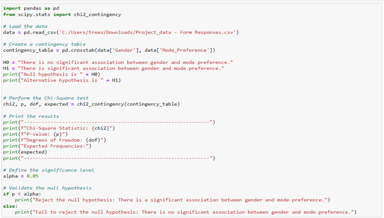
Figure 3 – Gender and Mode Preference Dependency Test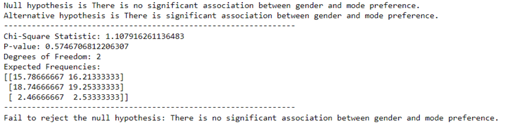
Figure 4 – Gender and Mode Preference Dependency Test ResultsAs Figure-3 shows the testing done to check the significant association between gender and mode preference using python. The results were obtained and as shown in Figure-4. There is no significant association between gender of the customer and the mode preference of the customer.
DEPENDENCY ANALYSIS OF INCOME AND SPENDING ON TEXTILES
Annual income of an individual has direct relationship with purchasing power of that person. But whether it
have a positive or negative significance towards that that person’s spending on textile purchase need to
determine. To study how income is associated with spending on textile purchase, hypothesis is created.
H0: There is no significant association between income and spending on textile purchase.
H1: There is significant association between income and spending on textile purchase.
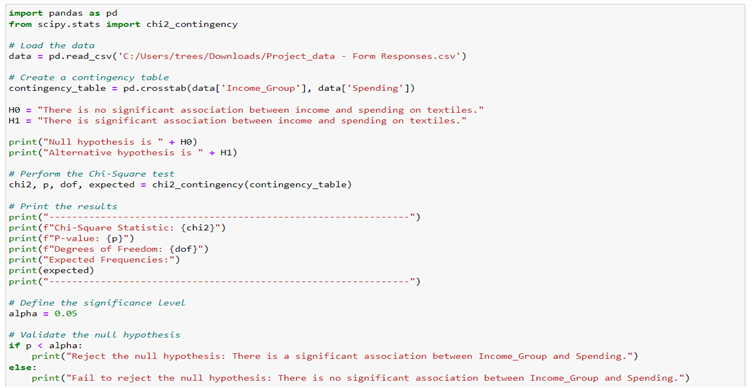
Figure 5 – Income and Spending on Textiles Dependency Test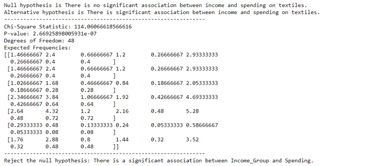
Figure 6 – Income and Spending on Textiles Dependency Test ResultAs Figure-5 shows the testing done to check the significant association between income and spending on textile purchase using python. The results were obtained and as shown in Figure-6. There is significant association between income of the customer and the spending of the customer.
DEPENDENCY ANALYSIS OF EDUCATION AND SPENDING ON TEXTILES
Education is a key demographic feature of a customer. Hypothesis were created and tested to determine the
dependency of education with spending on textile purchases.
H0: There is no significant association between education and spending on textile purchase.
H1: There is significant association between education and spending on textile purchase.
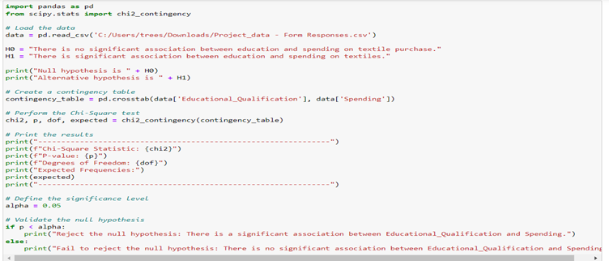
Figure 7 – Education and Spending on Textiles Dependency Test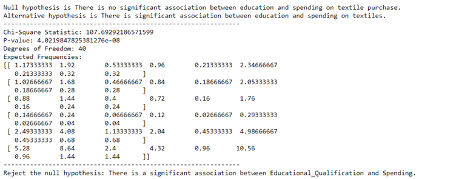
Figure 8 – Education and Spending on Textiles Dependency Test ResultAs Figure-8 shows, there is a significant association between educational qualification of a customer and spending on textile purchase.
DEPENDENCY ANALYSIS OF OCCUPATION AND SPENDING ON TEXTILES
Like education, occupation of a person is also an important demographic feature. Dependency analyses were
done to analyse the influence of occupation in spending.
H0: There is no significant association between occupation and spending on textile purchase.
H1: There is significant association between occupation and spending on textile purchase.
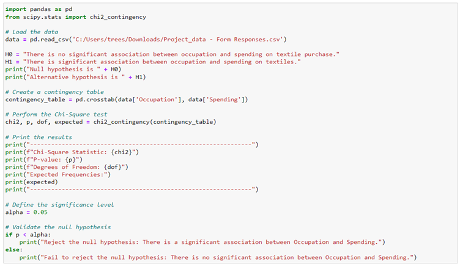
Figure 9 – Occupation and Spending on Textiles Dependency Test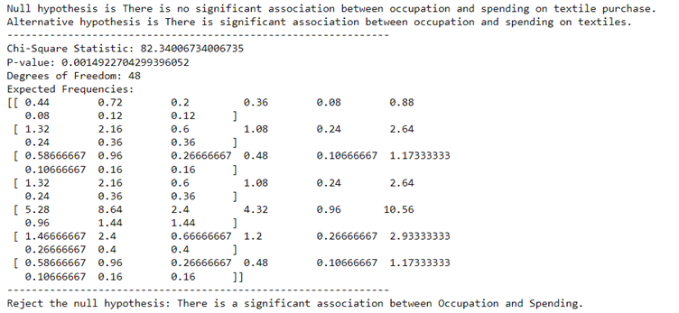
Figure 10 – Occupation and Spending on Textiles Dependency Test ResultAs Figure-10 shows, chi-square value, p -value, degree of freedom and expected frequencies were calculated using python and the p-value is compared to alpha value which was 0.05 and null hypothesis is rejected. That is, there is a significant association between occupation of a person and spending done on the textile purchase.
DEPENDENCY ANALYSIS OF LOCALITY AND MODE PREFERENCE
Locality is the demographic features shows what type of society a consumer is located in. Different types of
cities to villages, people are living in different areas. Most of the Indian population lives in villages.
But considering the young adults they tend to move to cities and settle over there for education and jobs.
But still some adults are still in villages and towns.
How locality is affecting mode preference of the customer is analysed. Hypothesis were created and tested
using chi square and results are as follows
H0: There is no significant association between locality type and mode preference.
H1: There is significant association between locality type and mode preference.
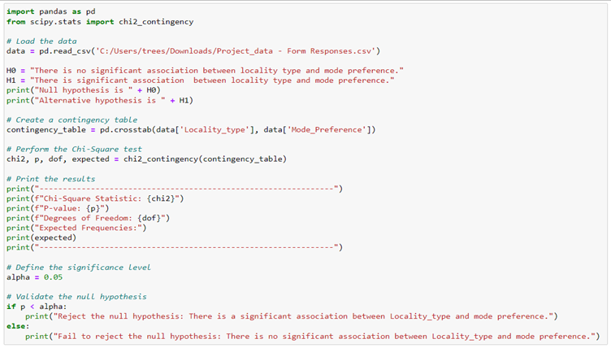
Figure 11 – Locality and Mode Preference Dependency Test

The p-value and chi-square values were calculated. And p-value is compared with alpha value and alternative hypothesis is rejected and null hypothesis is accepted. That means, there is no significant relationship between locality were customers lives and mode of purchase of the customer.
DEPENDENCY ANALYSIS OF LOCALITY AND FASHION CHOICE
Like mode preference dependency were tested, fashion choice of a person was tested for dependency with
locality type. Hypothesis and results are as follows.
H0: There is no significant association between locality type and fashion choice.
H1: There is significant association between locality type and fashion choice.
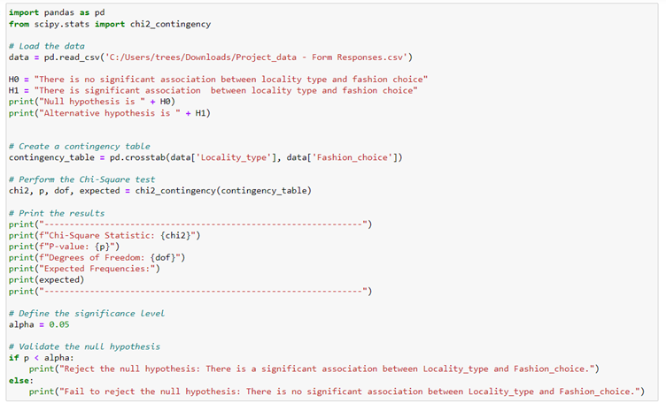
Figure 13 – Locality and Fashion Choice Dependency Test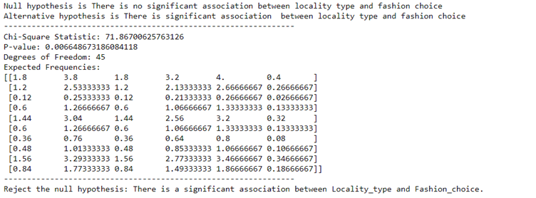
Figure 14 – Locality and Fashion Choice Dependency Test ResultChi-square statistics value, p-value, degree of freedom was calculated. Based on p-value null hypothesis is rejected and alternative hypothesis is accepted. So, there is a significant relationship between locality type and fashion choice of the customer.
CORRELATION ANALYSIS
Different factors affecting online and instore purchase were collected from the customers. Customers were asked to rank the factors. These factors were analysed for any correlation and heatmaps were created. From the whole data subset data is created for online factors and instore factors and corresponding correlations matrices were created with the help of pandas. With the help of matplotlib plot is created and with the help of seaborn library in python heatmap is created to visualize the correlations between factor variables.
CORRELATION ANALYSIS BETWEEN FACTORS AFFECTING ONLINE PURCHASE
Different factors that affect online mode of purchase is determined. Customers were asked to rank them in
the order of least affecting to most affecting factor. These rankings were assigned corresponding numeric
values. This analysis is to determine any correlation between these factors. With the help of pandas and
tabulate correlation matrix was created
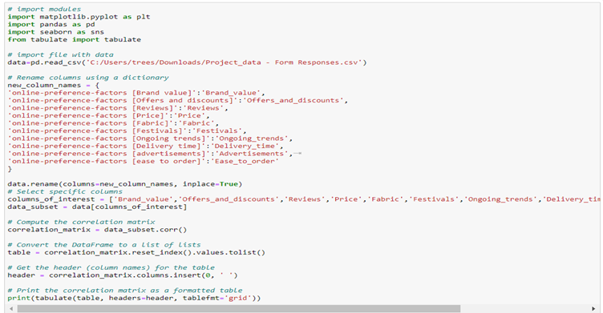
Figure 15 – Correlation Matrix for Factors Affecting Online PurchaseWith the help of pandas and tabulate correlation matrix was created. Table – 4 Shows the correlation matrix created.
Table 4 – Correlation Matrix for Online Factors
Figure 16 – Plotting Heatmap of Online
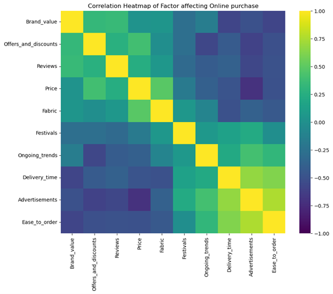
Figure 17 – Heatmap of Correlation Between Factors Affecting Online PurchaseTable - 4 show how each factor like brand value, price, reviews etc are related to each other. It can be positive or negative correlation. The heatmap plotted is showing how each feature is correlated.
CORRELATION ANALYSIS BETWEEN FACTORS AFFECTING INSTORE PURCHASE
Different factors that affect instore mode of purchase is determined. Customers were asked to rank them in
the order of least affecting to most affecting factor. These rankings were assigned corresponding numeric
values. This analysis is to determine any correlation between these factors. With the help of pandas and
tabulate correlation matrix was created
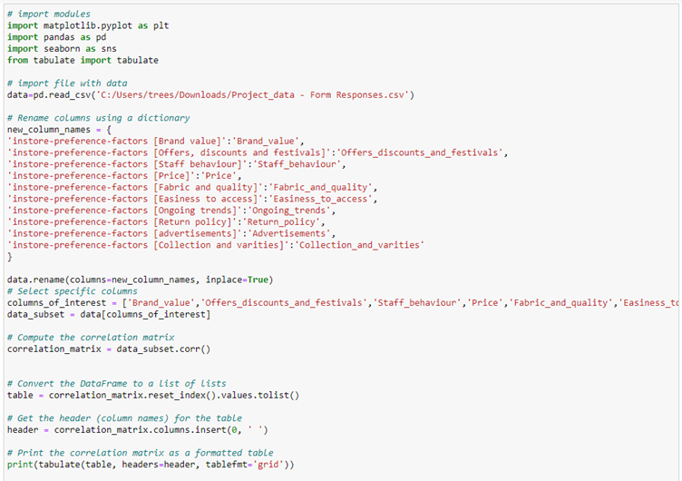
Figure 18 – Correlation Matrix for Factors Affecting Instore PurchaseWith the help of pandas and tabulate correlation matrix was created. Table – 4 Shows the correlation matrix created.
Table 4 – Correlation Matrix for Instore Factors
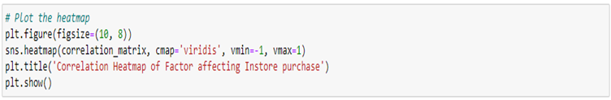
Figure 19 – Plotting Heatmap of Instore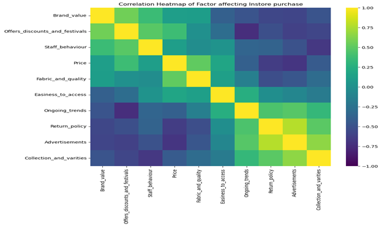
Figure 20 – Heatmap of Correlation Between Factors Affecting Instore PurchaseTable - 5 show how each factor like brand value, price, return policy etc are related to each other. It can be positive or negative correlation. The heatmap plotted is showing how each feature is correlated and shown in Figure-20.
MODE PREFERENCE
With the rise of internet technology, a lot of online textiles purchasing platforms are available. But some tend to prefer the conventional instore purchasing experience. To analyse this customer were asked to select the preferred mode of purchase, factors affecting each mode of purchase and brand preference in each mode of purchase. The results were aggregated and created dashboard. Figure 21 shows the mode preference of Indian young adult customers.
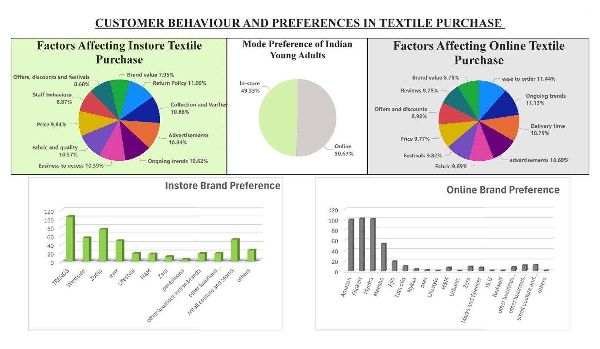
Figure 21 – Mode Preference DashboardMost of the customers preferred online mode than instore. The major factors affecting Instore purchase were return policy of the store, collection and varieties available and advertisement. The major factors affecting online mode of purchase were ease to order in the app, ongoing trends, and delivery time of the order. Customers were also asked to mark the preferred brands in both online and instore. The preferred brand in instore category is Trends followed by zudio. In the case of online sites, for textile purchase people were preferring amazon, Flipkart and Myntra.
MATERIAL PREFERENCE
Material of the clothes are one of the major factors considered while making a purchase. So, it is important to know what all the main materials are preferred by the customers. Customers were asked to mark their first three preferences of textile materials. Results were summarised and the following dashboard were created.
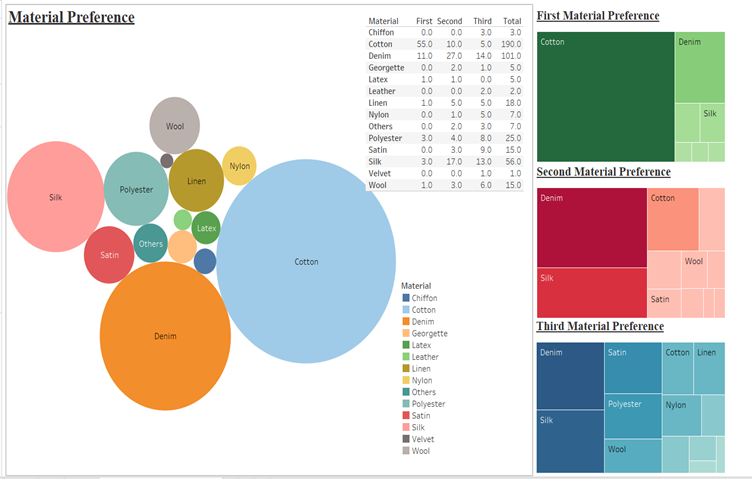
Figure 22 – Material Preference DashboardAs Figure 22 shows, the weighted total of the material preference was calculated. Separate material preferences also analysed. Most people prefer cotton materials, followed by denim and silk.
COLOUR PREFERENCE
Most individuals have a favourite colour when picking a dress. It may be according to some trend going on or because of colour that suits them very well. Knowing the colour preference of the customer will improve the business of textile industry. So, customers were asked to give their colour preference for the analysis. With the help of Tableau, bubble chart was created to represent the colour preference of the user.
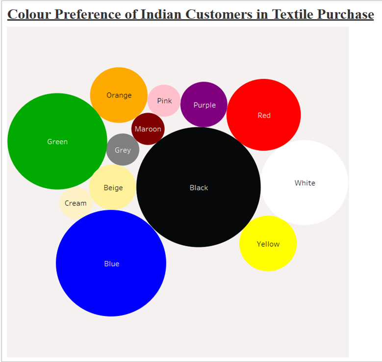
Figure 23 – Colour Preference Bubble ChartAs Figure 23 shows, major part of the customers chooses black as their favourite colour for clothes. This is followed by blue, green, white and red.
WORD CLOUD
Customers were asked to describe their purchasing patterns, or them as textile purchasers in one word or a phrase. With the help of word cloud library in python the data is analysed, and word cloud was created. Figure 24 represents steps taken to create the world cloud and Figure 25 shows the word cloud generated.
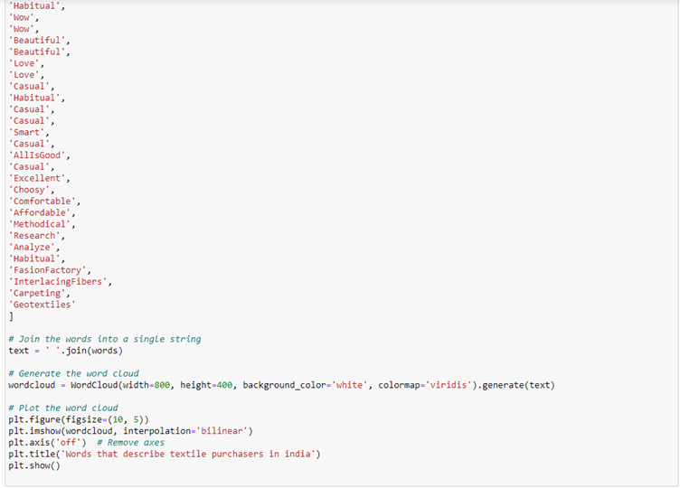
Figure 24 – Creating Word Cloud of Purchase Behaviour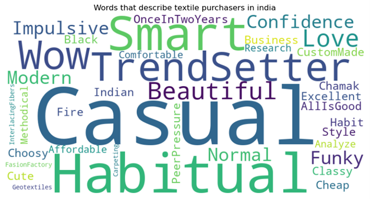
Figure 25 – Word Cloud of Purchase BehaviourThe most common word used by the customers was casual. Habitual, smart and trendsetter were also some of the most popular words to describe the textile purchases.
SUGGESTIONS
For businesses to excel in their field, it is important to know their customers. What they are preferring is
an important question that businesses should explore in regular interval. Since it will change according to
the time and situations. As part of this study the customer behaviour and preferences in textile purchase of
Indian young adults in the age of 18-40 were analysed. From the results obtained following are the
suggestions derived:
- While personalising the purchasing experience of a user, always keep in mind the age of the customer. Age and customization preference are dependent. Hence while showing clothes, readymade or custom tailor stitched clothes can be shown based on age.
- Not just income of the customer but education and occupation also have significant association with the spending on textile purchase. So, businesses when opening high end brand, it is advisable to open near bigger employment is happening and people with very high education works.
- Locality were customers living in and fashion choice were significantly associated. Hence, when providing some services businesses should think about the locality in which they are providing the service.
- For instore textile purchases, customers prefer better return policy and collections are varieties available. Hence improving these will help in business.
- For online textile purchases, customers prefer sites with ease to order, and better delivery time. So online providers should keep this while building the site and providing delivery services.
- Young adults love the instore stores like trends and zudio. That clearly means affordable clothes with newer trends which has good return policy, varieties. So, others instore shops also should adopt similar policies to attract more customers.
- In case of online services for textile purchases, people are preferring sites like amazon, Flipkart and Myntra because of their easy to order, and better delivery time. So, services should give much importance to the user interface of their site which is easy to order under understand and offers better delivery time.
- If the business is targeting young adults, their choice of materials also needs to be considered. As the study suggests, young adults prefer cotton as their preferred choice of material followed by denim. When the target customers are young adults, businesses should have collections with these materials.
- The young adults also have colour preference when it comes to clothes. Most preferred black colour clothes. So, while stocks are selected, and dresses are created it will be a good idea to have a black option as well.
- Young adults like casual clothing, Hence businesses targeting them should have enough casual clothing available.
LIMITATIONS AND SCOPE OF FUTURE RESEARCH
LIMITATIONS
The data sample customers were the extremely smaller part of the total data, that is all Indians who are in
the age of 18-40. Surveying the whole population is very difficult. Hence while creating sample population,
it should at least accurately represent the whole population. In the country like India, to create sample
also it requires a lot of data. It will practically be impossible to collect such large-scale data without a
surveying agency. This is limitation of this study.
Customers were asked to fill the data to the questionnaire in the form of Google forms send through WhatsApp
and other social media platforms. Even though it will take only less than 10 minutes, people tend to get
bored from answering these questions. And feel unnecessary until it is mandatory for them to do. Which will
lead to customers giving answers without even properly reading the questions. This might cause little bit of
discrepancies in data. That is also a limitation of this study. If we personally approach and ask the
questions and collecting data, the physical state and how they are giving answers also can be analysed but
that is not possible for this survey. Where we need data from all parts of this country. Other one solution
for this for bigger online businesses is randomly adding survey questions in the page of users which they
tend to answer correctly and collectively taking the answers to all the questions and analysing.
Other one limitation of the study is bias. People might have some kind of bias. That may lead to giving
incorrect answers. That is because of their mood while filling the data or some other that influenced them.
Even though we tend to believe customers gave responses correctly, there are chances of lot of incorrect
responses.
SCOPE OF FUTURE RESEARCH
The scope of future research of customer behaviour and preferences is very vast. It is an absolute
requirement to analyse the customer behaviour for market segmentation and market capturing. The needs and
preferences of the customers are not constant. It will change with the time and trends. Hence it is
important to check the preferences of the customers in regular intervals to cater them their fresh needs and
preferences.
For the retailers also it will give a lot of suggestions to what can be done to make the business more
profitable. After all that is the aim of every business. Knowing the customers is the path to it. Fulfilling
their needs will brings more profit to company and will maintain loyal customer base.
Customer behaviour analysis have a lot of scope for future research. And this type of research should be a
continuous process. To know the customers more in a better way. To fulfil their needs and to have a smooth
functioning of business. If the business is not adopting with the changing needs of customers there will be
no future for that business and will lose existing customers as well.
CONCLUSION
As the study concluded successfully, a lot of great insights about the purchasing behaviour and patterns of Indian adults in the age 18-40 yrs. are identified. Which can help businesses to have better selling and marketing strategies. For the chi square test, it was concluded that, there is significant association between age and customization preference, locality and fashion choice. It is also identified that income, education and occupation of a customer has significant association with the spending on textile purchase. Chi-square test also revealed that there is no association between mode of purchase with gender of a person and locality of a person. The study also suggested that people prefer online mode of purchase than instore. The major factors that affect online mode is easy to order and delivery time. For online purchase customers prefers sites like amazon, Flipkart and Myntra. In instore purchase, factors affecting are return policy of the store, collection and varieties available. People prefer stores like trends and zudio for instore purchase. There is material preference for customers. Majority prefer cotton followed by denim. Black is the most preferred colour for textiles by young adults. The one word or phrase that customers describe themselves or their purchasing behaviour is casual.
BIBLIOGRAPHY
- Umamaheswari, R. Bhuvaneswari and V. Bhuvaneswari, (2014), “Study on consumer preference towards textile retail outlets with special reference to selected textile outlets in Coimbatore city”, BEST: International Journal of Management, Information Technology and Engineering (BEST: IJMITE), Vol. 2, Issue 1
- Dr. S. Parimala, (2023), “A study on consumers satisfaction towards select branded textile retail outlets in Tirupur city”, International Journal of Creative Research Thoughts (IJCRT), Vol. 11, Issue 3
- Dr. Sandeep Kumar, (2021), “A Study of Consumer Behavior in Apparel Industry in Delhi”, International Journal of Innovative Research in Engineering & Management (IJIREM), Vol. 8, Issue 6
- Chandra Kumar Dwivedi and Dr. Garima Mathur, (2019), “A Study on Consumer Behaviour Towards Online Apparel Purchase in Indore City”, International Journal of Engineering Development and Research (IJEDR), Vol. 7, Issue 3
- Dishath Kumar. S and R. Mayilsamy, (2020), “A study on consumer buying behaviour of retail textile shops (with reference to Tiruppur region)”, EPRA International Journal of Research and Development (IJRD), Vol. 5, Issue 11
- Vinith Kumar Nair and Anil Kumar R, (2020), “Consumer Buying Behavior in Fashion Retailing: an Empirical Study on Men’s Fashion Apparels”, Seventeenth AIMS International Conference on Management, pp. 1201-1208
- Pawan Kumar, (2017), “An analytical study of consumer buying behavior towards fashion apparels in Ludhiana”, Journal of Internet Banking and Commerce, Vol. 22, No. 3
- Karthikeyan Sundarraj, (2011), “An investigation on consumer behavior and preferences towards apparel, purchase by Indian consumers age 15 – 25”, https://hb.diva-portal.org/smash/get/diva2:1312790/FULLTEXT01
- Pooja Kunwar, (2017), “A Study on Consumer Behavior Towards Organized Apparel Retail Industry With Reference To Gujarat”, https://s3-ap-southeast-1.amazonaws.com/gtusitecirculars/uploads/Synopsis,%20Pooja%20Kunwar,Enrollment%20no-%201299990992021_657669.pdf
- “Shift in Indian Apparel Consumer Behavior”, (2023), https://www.dfupublications.com/categories/article/shift-in-indian-apparel-consumer-behavior
- “India - Knitting the Future”, (June 2024), https://www.investindia.gov.in/sector/textiles-apparel